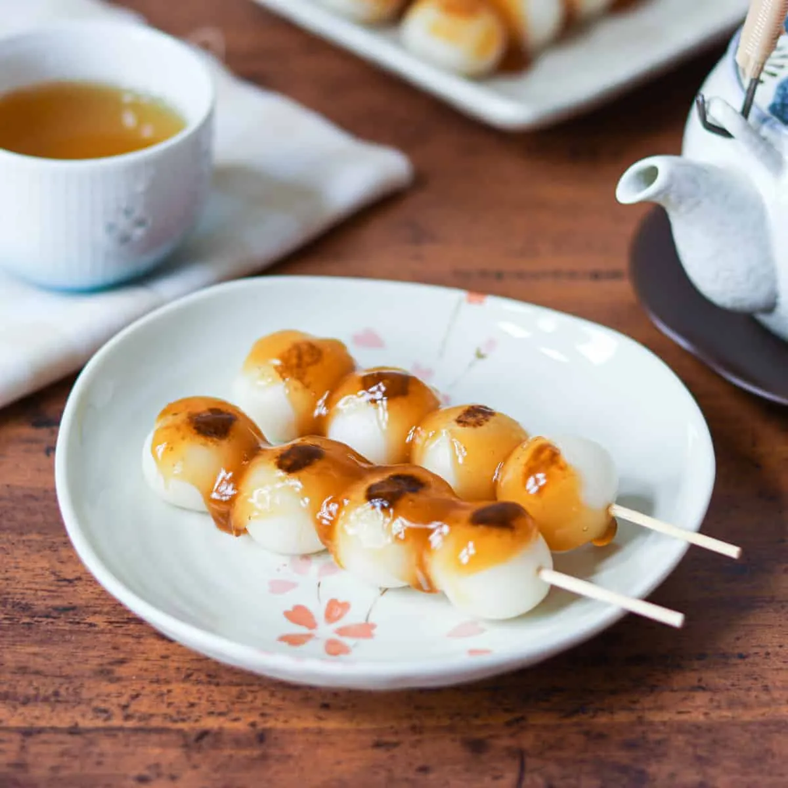

Desserts
Ladyfinger Cake
Layers of strawberries, mascarpone cream and ladyfingers. No baking.
Chewy Japanese rice dumplings glazed in sweet soy sauce.

Every step is ticked off. Want to cook it again?
Desserts
Layers of strawberries, mascarpone cream and ladyfingers. No baking.

Desserts
A rich, crumbly chocolate dessert with toasted walnuts.

Desserts
Syrup-soaked semolina cake layered with creamy ashta.